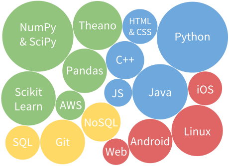
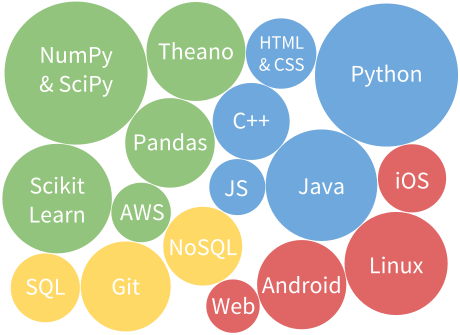

Craig Corcoran
I'm a machine learning PhD transitioning to industry. I'm passionate about designing new ways to improve user experience through machine learning, both at scale and in smaller exploratory settings.
Skills
Machine Learning
Software
 

Experience & Education
UT Austin Computer Science PhD Program
(2010 – Present)
Research:
Explored Representation Discovery for Reinforcement Learning w/ Peter Stone, Continuous-action Contextual Bandits w/ Pradeep Ravikumar, and Adaptive Hypothesis Testing w/ Constantine Caramanis
Teaching:
Prepared programming assignments, held discussion sections, and gave lectures as a TA for Large Scale Machine Learning, Convex Optimization, Artificial Intelligence, and iOS Mobile Development
Courses:
Studied Reinforcement Learning, Graphical Models, Probabilistic Algorithms, Numerical Linear Algebra, Data Mining, Machine Learning
Other:
Recieved NSF Fellowship; Co-Founded Deep Learning Reading Group
IBM T. J. Watson Research Center Internship
(Summer 2013)
Developed methods for using satellite images to predict weather and its impact on solar energy markets with Gerry Tesauro
NASA Dexterous Robotics Lab Internship, JSC
(2008 – 2009)
Researched particle filter methods for localizing in-hand objects using touch sensor data from Robonaut 2 with Rob Platt
Rice University
(2005 – 2010)
B.A. in Mechanical Engineering and Cognitive Science with honors